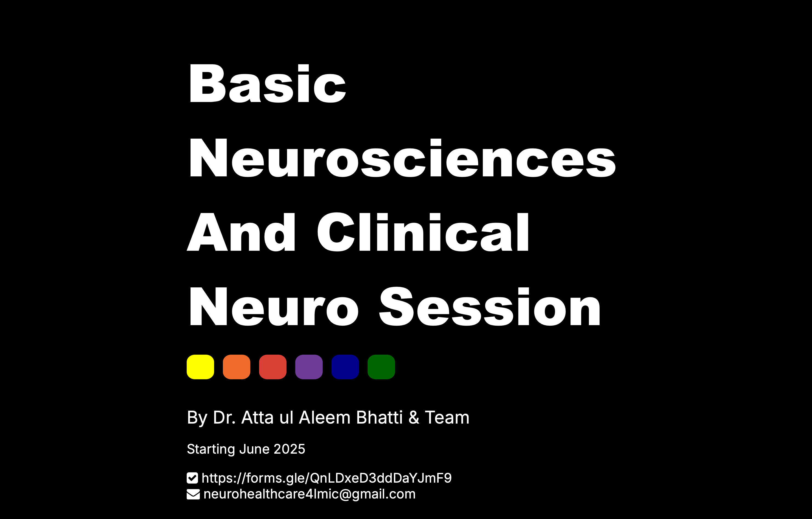
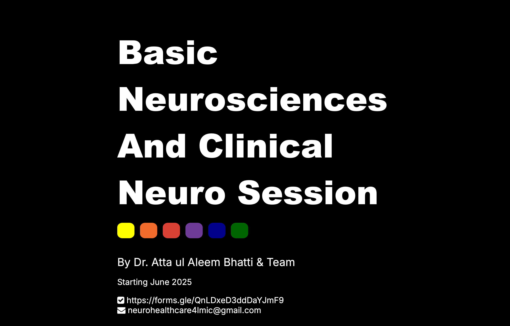
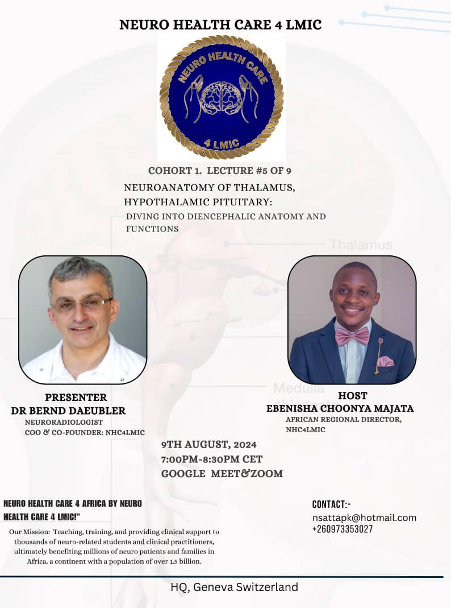

African Chapter
Events and Highlights
Insights from Our First successful Cohort
 

Our First Cohort of the African Chapter
Lecture 9: Limbic system and functional neuroanatomy involving Memory, addiction, schizophrenia
Lecture 8: Spinal cord, nerve root, plexus and peripheral nerves. Autonomic nervous system
Lecture 7: Functional Neurovascular Anatomy: Stroke (Ischemic / haemorrhagic), Aneurysm and AVM (Arterio vascular malformation)
Lecture 6: TNeurons, Neuroglia and Brain tumours. Tractography, BBB (blood brain barrier) ICP (Intracranial pressure).

Lecture 5: Thalmus, Hypothalamic Pituitarz: Driving in to diencephalic anatomy and functions.
Lecture 4: Neuronatomy of Basal Ganglia, Cerebellum and Corticospinal tract: Applied clinical knowledge of various motor abnormalities.
Lecture 3: Brainstem & Cranial Nerve Nuclei: Clinical anatomy, functional localisation and lateralisation of lesions
Lecture 2: Functional Neuronatomy of Human Cerebral Cortex: Topography, classification and clinical concepts
Lecture 1: Introduction to Functional Neurological Anatomy Concepts: Clinical applications
Collaborative meeting with Future African Neurosurgeons (AFAN)
 Annual meeting with Med Talk Zambia
Annual meeting with Med Talk Zambia